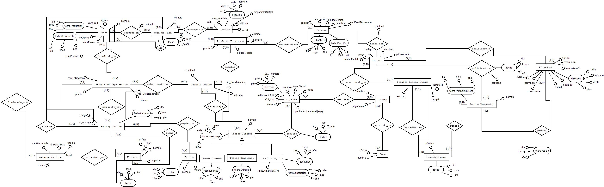
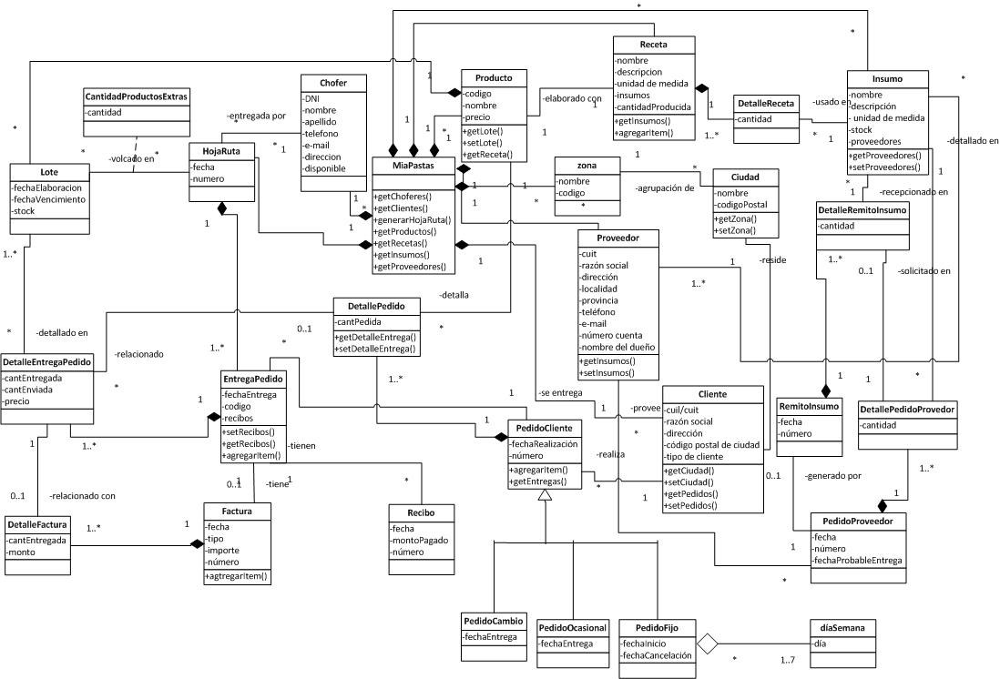

Proyecto¶
Objetivos¶
Desarrollar un sistema de gesti?n para la f?brica de pastas M?A PASTAS participando de un desarrollo ?gil e introduciendo innovaciones tecnol?gicas en una arquitectura web, permiti?ndonos la experiencia de trabajar en equipo.
Alcance del Sistema¶
Este sistema realizar?: ? Gesti?n de recetas. ? Gesti?n de productos ? Gesti?n de producci?n. ? Gesti?n de clientes. ? Gesti?n choferes. ? Gesti?n de proveedores. ? Gesti?n de pedidos de clientes. ? Gesti?n de insumos. ? Gesti?n de pedidos a proveedores. ? Gesti?n de zonas. ? Gesti?n de ciudades.
L?mites del Sistema¶
En esta versi?n del sistema no se manejar? la gesti?n de vencimiento de insumos. Se asume que todos los pedidos a proveedores son recibidos correctamente, y no se contempla la gesti?n de reclamos por faltante o sobrante de productos del pedido. Tampoco manejara la facturaci?n y pago a proveedores. Cuando se reparten los pedidos solamente se podr?n dejar productos de m?s a un cliente siempre y cuando se hayan cargados productos extras en la hoja de ruta que permitan cumplir con esas solicitudes no programadas.
Requisitos Funcionales¶
Gesti?n de recetas
- Registrar receta.
- Modificar receta.
- Baja de receta.
- Consultar receta
Gesti?n de productos
- Alta producto
- Modificar producto
- Baja de producto
- Consultar productos
Gesti?n de producci?n
- Registrar producci?n.
- Consultar producciones.
- Generar listado de productos terminados disponibles.
- Decrementar stock de un producto terminado.
- Modificar precio de producto terminado.
Gesti?n de clientes
- Alta cliente.
- Modificar cliente.
- Consultar cliente.
- Baja cliente.
- Consultar todos los clientes morosos.
- Consultar Cuenta Corriente de un Cliente.
- Generar Listado de Cuenta Corriente.
Gesti?n de choferes
- Alta chofer.
- Modificar chofer.
- Baja chofer.
- Consultar choferes.
Gesti?n de proveedores
- Alta proveedor.
- Consulta proveedores.
- Baja proveedor.
- Modificar proveedor.
Gesti?n de Pedidos a proveedores
- Realizar pedido a proveedor.
- Modificar pedido de un proveedor.
- Consultar pedidos pendientes de un proveedor.
- Eliminar pedido pendiente a proveedor.
- Recepci?n de pedido a proveedor.
Gesti?n de pedidos de clientes
- Registrar pedido fijo para cliente fijo.
- Registrar pedido ocasional para cliente ocasional.
- Modificar productos del pedido de cliente.
- Eliminar pedido cliente.
- Consultar pedidos de un cliente.
- Cobrar a cliente.
- Registrar Rendici?n del Reparto.
- Generar hoja de ruta.
- Registrar pedido de cambio por productos vencidos.
- Modificar fecha de entrega de un pedido ocasional.
- Modificar periodicidad de entrega de un pedido fijo.
- Consultar productos a entregar en un per?odo.
Gesti?n de insumos
- Alta insumo.
- Actualizar stock insumo.
- Agregar insumo como comercializado por un proveedor.
- Eliminar insumo a proveedor.
- Generar listado de insumos disponibles.
- Baja de insumo.
Gesti?n de zonas
- Alta zona.
- Baja zona.
- Modificar zona.
- Consultar zona.
Gesti?n de ciudades
- Alta ciudad.
- Baja ciudad.
- Modificar ciudad.
- Consultar ciudad.
Requisitos No Funcionales¶
? Se va a hacer uso de una arquitectura cliente-servidor basada en tecnolog?a Web, se crear? una red de uso interno (intranet) en donde los clientes se conectar?n al servidor central mediante un navegador web. ? El lenguaje elegido para desarrollar la aplicaci?n es Python versi?n 2.7.10 a trav?s del Framework Django versi?n 1.8.3. ? La aplicaci?n debe utilizar el Motor de Base de Datos relacional PostgreSQL versi?n 9.0.18. ? Proveer diferentes perfiles de usuarios cada uno con distintos permisos para ejecutar las funcionalidades provistas por el sistema. ? Debe contar con un manual de uso y ayuda en l?nea. ? Debe utilizar el idioma espa?ol para los mensajes y textos de la interfaz.
Decisiones sobre la tecnolog?a utilizada¶
El sistema nace como un peque?o sistema web interno (Intranet), donde cada usuario puede acceder desde una terminal remota al sistema. La idea a futuro es poder escalar el sistema con muy poco esfuerzo para que funcione en Internet, se podr?a as?, por ejemplo, facilitar a los clientes realizar pedidos. Tambi?n influy? en esta decisi?n los deseos del grupo de aprender a desarrollar aplicaciones bajo dicha tecnolog?a, ya que las aplicaciones web son los sistemas de informaci?n con mayor demanda en la actualidad. Se selecciona Django como framework que utiliza el lenguaje Python por la extensibilidad que provee para continuar escalando el software a futuro, si bien el sistema nace como un sistema de uso interno se empieza a percibir por parte del cliente la intenciones de publicarlo en Internet y esto hace que decidamos utilizar algo que escale r?pido y bien. Caracter?sticas de Django: ? Es un framework que respeta el patr?n de dise?o MVC. ? Cuenta con una aplicaci?n administrativa que permite administrar varias p?ginas. ? Provee un Mapeador Objeto-Relacional. ? Provee una API de Bases de Datos robusta. ? La meta principal de Django es facilitar la creaci?n de sitios web complejos. ? Es muy usado actualmente. ? Es de f?cil aprendizaje. ? Es vers?til: lo que posibilita el desarrollo e implementaci?n r?pido de aplicaciones web escalables y seguras. ? Posee licencia BSD: lo que otorga la libertad de distribuir y comercializar los productos desarrollados utilizando el mismo. ? Tiene una amplia documentaci?n Online. El lenguaje Python posee una sintaxis simple, clara y sencilla, el tipado din?mico, la gran cantidad de bibliotecas disponibles, la facilidad de instalaci?n en sistemas operativos tanto en Windows como Linux, la potencia del lenguaje (parecido al pseudoc?digo) y la documentaci?n disponible, entre otros, hacen que desarrollar una aplicaci?n en Python sea sencillo y muy r?pido. Si bien SQLite ya viene incorporado con Django, hemos decidido utilizar el Motor de BD PostgreSQL por los siguientes motivos: o Nos provee manejo de concurrencia para los diferentes usuarios que har?n uso de la aplicaci?n. o Es de c?digo abierto. o Es compatible con el framework. o Posee funcionalidades orientadas al resguardo y migraci?n de datos m?s estables y seguras frente a las proporcionadas por SQLite, MySQL y los otros motores compatibles con Django.
Perfiles de usuario¶
? Administrador: se encarga de la gesti?n de roles y permisos para los diferentes usuarios del sistema. ? Encargado de Producci?n: se encarga de la gesti?n de las recetas, producto y producci?n. ? Encargado de Ventas: se encarga de la gesti?n de clientes, gesti?n de pedidos a clientes, gesti?n de zonas y gesti?n de ciudades. ? Encargado de Compras: se encarga de la gesti?n de proveedores, gesti?n de insumos y gesti?n de pedidos a proveedores. ? Encargado de reparto: se encarga de la gesti?n de choferes. ? Encargado de Cobros: se encarga de consultar todos los clientes morosos, consultar cuenta corriente de un cliente, generar listado de cuenta corriente y cobrar a cliente. ? Encargado de Stock: se encarga de decrementar stock de producto terminado, consultar stock de producto terminado, Registrar rendici?n de reparto, generar hoja de ruta, consultar productos a entregar en un per?odo, actualizar stock de insumo, baja de insumo, consultar stock de insumos en un per?odo y recepci?n de pedido a proveedor.
Modelo ER¶
Diagrama de clases¶
Diagrama de estados de pedido¶